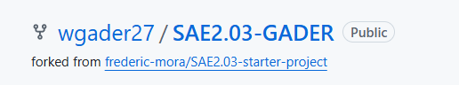
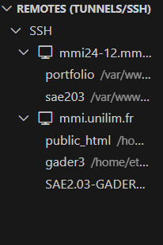
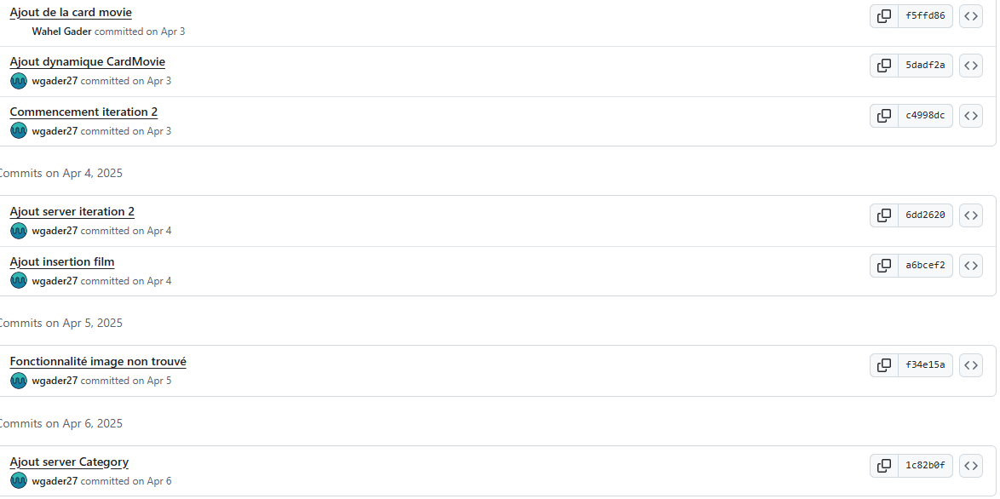
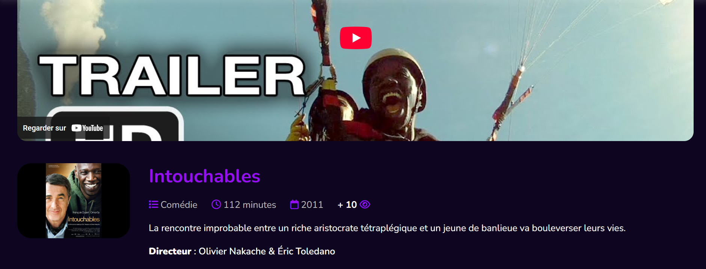
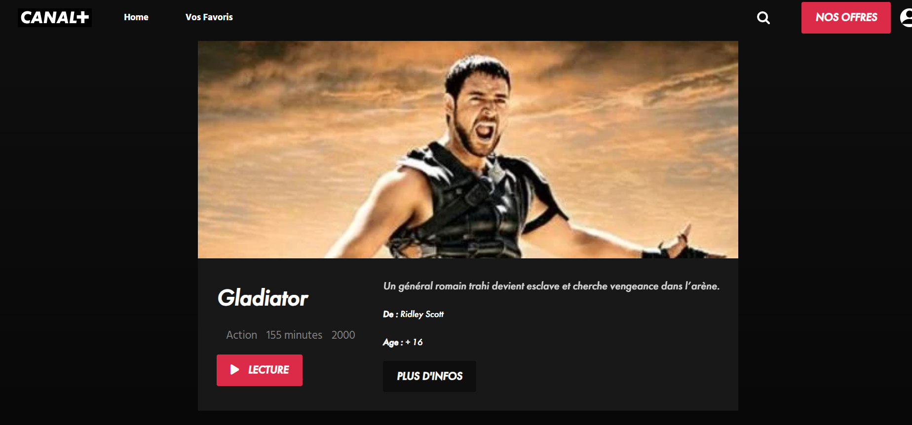
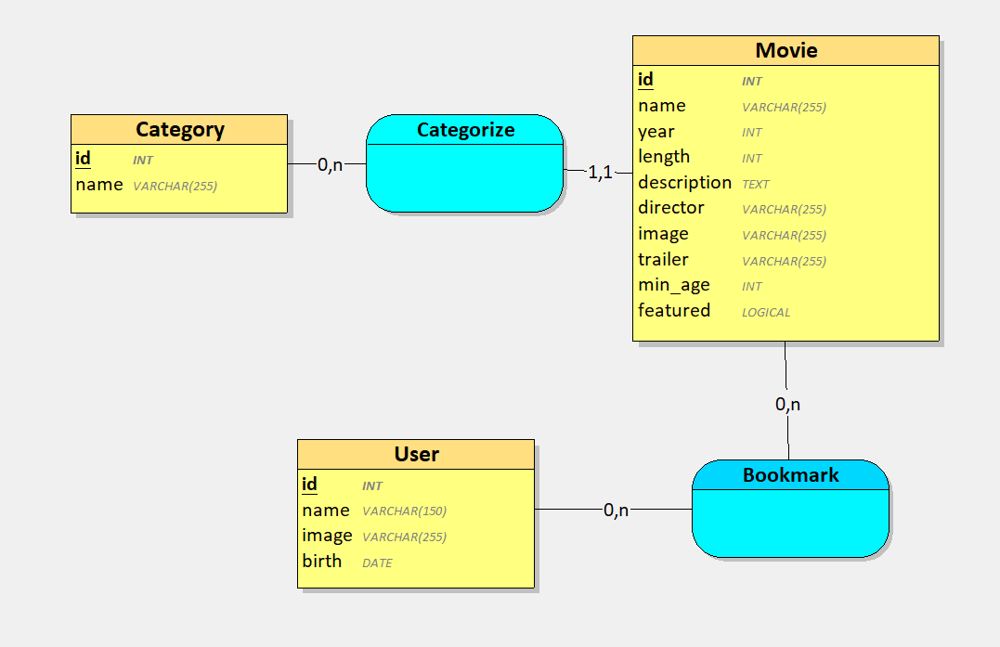
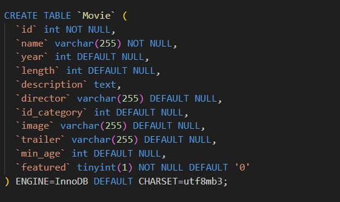
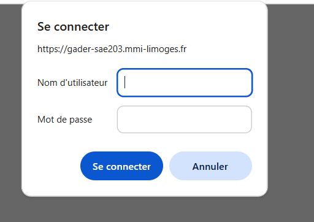
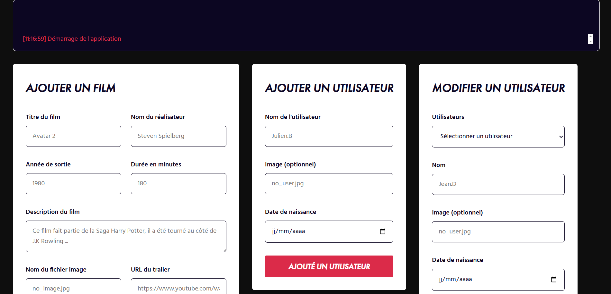

SAE 2.03 - Concevoir un site web avec une source de données
Réalisé en avril 2025 dans le cadre du BUT MMI
Description du Projet
Dans le cadre de la SAÉ 2.03, j’ai développé une application web de type plateforme de streaming, similaire à Canal+. Ce projet m’a permis de combiner mes compétences en développement web, intégration, gestion de base de données et hébergement.
L’objectif était de concevoir un site dynamique permettant de consulter et manipuler des données stockées dans une base de données, tout en respectant les normes d’accessibilité et les bonnes pratiques du web.

Démarche
Pour cette SAE, j'ai suivi une démarche itérative en ajoutant progressivement des fonctionnalités à mon site. Voici les étapes que j'ai suivies :
- Mise en place de l’environnement de développement
- Conception itérative du site
- Mise en de la base de données
- Mise en ligne du site
Mise en place de l’environnement de développement
J'ai commencé par créer un fork du repository GitHub de départ, puis je l’ai cloné sur le serveur mmi.unilim.fr via SSH en utilisant Visual Studio Code et l’extension Remote SSH. J'ai également mis en place une base de données MySQL via phpMyAdmin.



Itérations fonctionnalités
Le développement s’est déroulé par itérations successives, chacune apportant une ou plusieurs fonctionnalités. J'ai réalisé au total 12 itérations pour ce projet. Voici quelques-unes des fonctionnalités implémentées :

Itération surprise
Vers la fin du projet, j'ai eu affaire à une itération surprise : la refonte du site Canal+. J'ai analysé le design de Canal+, les couleurs, les zones et leur placement. J'ai réussi à implémenter et adapter les différents composants selon le thème. Cette partie du projet m'a permis de travailler de manière plus approfondie sur le design et l'intégration.

Base de données
J'ai créé un sous-dossier DocumentationBD/ contenant un export de ma base de données au format .sql, la dernière version de mon modèle (MCD) créé avec Looping et un fichier README.md expliquant les modifications apportées à la base de données pour chaque itération.


Mise en ligne & Sécurisation du site
J'ai mis en ligne mon site en l’hébergeant avec PulseHeberg pour le rendre accessible en ligne. J'ai utilisé le protocole SFTP pour transférer les fichiers du site sur le serveur distant. J'ai également sécurisé la partie administrateur du site en implémentant un système d'authentification et en restreignant l'accès aux utilisateurs autorisés.


Ressources utilisées
R2.12 : Intégration web
Cette ressource m'a aidé à coder de manière sémantique et efficace le code HTML/CSS.
R2.13 : Développement web
Cette ressource m'a permis d'apprendre à bien utiliser JavaScript avant de débuter la SAE.
R2.15 : Hébergement web
Cette ressource m'a aidé à comprendre les protocoles SSH et SFTP ainsi que l'utilisation d'Apache pour l'hébergement. La ressource m'a aussi appris à sécuriser mon site web.
R2.14 : Base de données
Cette ressource m’a aidé à faire des requêtes SQL et à les mettre en pratique.
Bilan
Cette SAÉ m’a énormément apporté, autant sur le plan technique que sur le plan méthodologique. J’ai appris à travailler avec une base de données et à la relier à un site web pour afficher des contenus dynamiquement. Cela m’a fait comprendre toute l’importance de bien modéliser les données et de séparer clairement les rôles du front-end, du back-end et de la base de données. J’ai aussi développé de nouvelles compétences en PHP et MySQL, que je ne maîtrisais pas avant. Mettre en place un système de requêtes, récupérer des données en JSON et afficher tout cela proprement sur une interface utilisateur est quelque chose que je trouve aujourd’hui beaucoup plus naturel. Aujourd’hui, je me sens beaucoup plus à l’aise avec le travail sur serveur distant, la gestion d'un repository et la sécurisation de la partie admistrateur.
Compétences développées
Exploiter de manière autonome un environnement de développement efficace et productif
Produire des pages Web fluides incluant un balisage sémantique efficace et des interactions simples
Générer des pages Web à partir de données structurées
Mettre en ligne une application Web en utilisant une solution d’hébergement standard
Modéliser les données d’une application Web